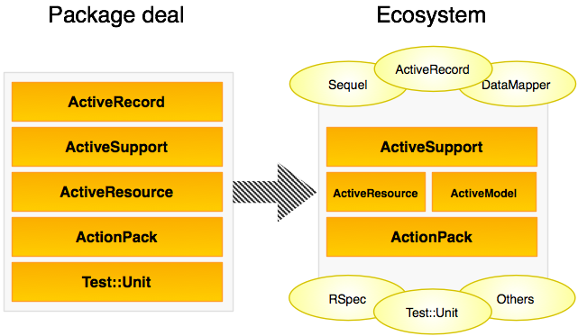
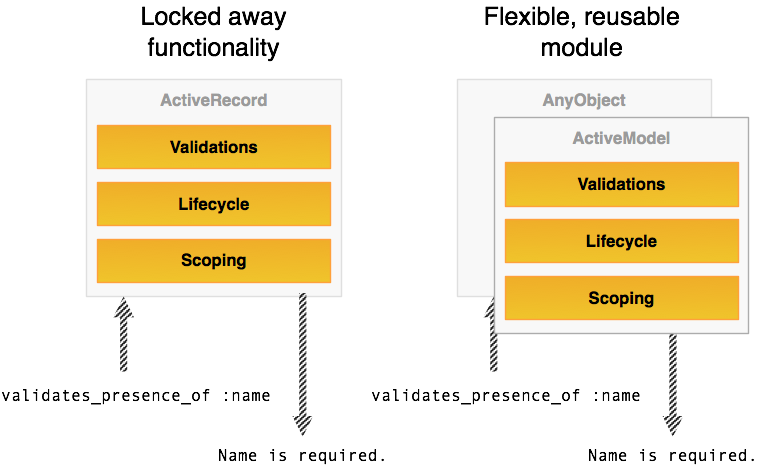
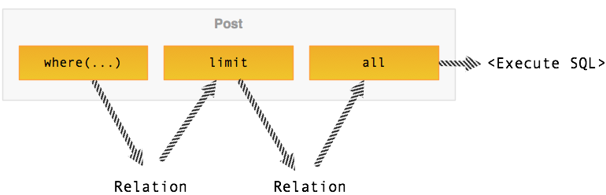

rails_upgradeRails debuted in late 2004 and changed the way a lot of people think about web development. Today, in early 2010, we’re looking at a totally new, more mature framework in Rails 3.0 that (I believe) will change the way a lot of Rails developers think about how they use it. The new features, performance improvements, and API changes aren’t incredibly drastic, but they do present great opportunities (and challenges) to those looking to upgrade existing code to the newest version. This e-book looks at how to upgrade your existing Rails app to Rails 3, how to convert common patterns to new ones, and how to improve your existing code in light of the new Rails 3 features. First, though, we should go over some of the high-level philosophical and architectural changes in the Rails code between versions 2 and 3.
When the Merb/Rails merge was announced, some members of the Rails community were very interested to see how the final product ended up: was it going to be more of the same, something totally new, or simply Merb 2.0? But as the final product approaches, it turns out we’re getting the best of both worlds: the ease of use and packaging of Rails with the juicy technical bits of Merb. Who can argue with that?
As the team worked out a vision for the project, obviously changes were made to the Rails way of doing things. These big-picture changes have concentrated on a few key areas:
In order to hit these objectives, DHH, Yehuda, Josh, and the rest of the Rails team have extracted things into some new components, expanded others, and removed still others to allow for agnostic integration points for things like the ORM and testing framework.

The general movement seems to be from a monolithic, one-stop shop approach to a looser ecosystem of code that works together with a straightforward set of sensible defaults. You’re no longer “locked in” to Active Record or made to use code injection and hacks and such to get your testing framework integrated. Instead, there are integration hooks all over the place to let generators generate components for the various options, or helpers include different modules. It’s a great way to support the existing plugin and tool ecosystem, except this time with an established API.
One of the biggest shifts in the codebase has been toward using simple, composed components and a lot of Rack features in the request chain in place of specialized, one-off classes. This has affected a lot of things, but one of the major changes has been the addition of Action Dispatch.http://github.com/rails/rails/blob/master/actionpack/lib/action_dispatch.rb
Action Dispatch is a “new” component in Action Pack (extracted and expanded from the previous logic) that handles a number of things related to requests and responses:
Breaking this functionality out into its own component and decoupling much of it creates a much more flexible call stack for requests. This means you can more easily jack into the process with your own logic or improve the existing functionality. I’m sure we’ll see a lot of plugins taking advantage of this to create interesting middleware hacks, improve callbacks and lifecycle methods, hack in their own middlewares to handle specialized logic, or even plug in improved or application-specific routers.
As a result of the changes in the request chain, the controller stack has also seen a significant overhaul. Previously, every controller inherited from ActionController::Base, either directly or by inheriting from ApplicationController. If you wanted to slim down the call stack, you had to either build a smaller app with Sinatra or Rack to sit next to your main Rails application (pre-Rails 2.3) or use Rails Metal/Rack middlewares (post-Rails 2.3).
In Rails 3.0, this concept of middleware plays an even more central role in the controller hierarchy.

The bottom of the stack is AbstractController, a very low level “controller.” Rails uses this class to abstract away essentials like rendering, layouts, managing template paths, and so on, while leaving more concrete implementation details to its subclasses. AbstractController exists only to provide these facilities to subclasses. Thus, you should not use this class directly; if you want something super-slim, create a subclass and implement render and the few other pieces you need.
Each subsequent jump up the hierarchy is actually a class that inherits from the previous, including modules to compose its behavior. So to create something slim without implementing a lot of plumbing, you could use the next rung on the compositional ladder: ActionController::Metal. Metal essentially exposes super-simple Rack endpoints to which you can add more ActionController functionality just by including extra modules. These little classes are excellent for replacing those Rack/Sinatra apps for file uploads or what have you, while still having the power to easily build out to rather rich controller objects.
Finally, if you need the full monty (i.e., like a controller in Rails 2), then you’ll need to inherit from ActionController::Base. This class inherits from ActionController::Metal and includes a slew of modules to handle things like redirecting the user, handling implicit rendering, and a number of helpers for other stuff like caching.
The advantage of this approach is that you can take one of the base classes like Metal and include your own modules to create specialized controllers. I foresee someone using this to create a simple way to serve up resources (e.g., PostsController < ResourcesController(:posts) or something like that), much like people have done previously, or using it as a way to quickly build API backends. This is the other piece of the major refactor that excites me, since we’re looking at a new way to construct reusable code and assemble it into usable applications.
Though the public API for models is generally the same (with a few additions and changes I’ll cover in a subsequent blog post), Active Record is now powered by the brain-melting Active Relation, a powerful relational algebra layer.

What does that mean for you? Well, basically it means Active Record will be smarter and more powerful. Rather than fairly naïve SQL generation, it uses some fancy mathemagical approach that should generate smarter queries. Frankly, I haven’t had a lot of time to research these features for myself, but when I do, I’ll be sure to post. If you’ve posted about this stuff somewhere, or seen a good post explaining it, then by all means let me know.
The second big change in Model Land is the extraction of much of the rich logic in Active Record objects like callbacks, validations, serialization, and so on into the Active Model module.

You can use this module to make any object behave like an Active Record object. For example, let’s say you wanted to add some validations to a PORO (Plain Old Ruby Object) representing a host on a network:
class Host
include ActiveModel::Validations
validates_presence_of :hostname
attr_accessor :ip_address, :hostname, :os
def initialize(hostname, ip_address, os)
@hostname, @ip_address, @os = host, ip_address, os
end
end
h = Host.new("skull", "24.44.129.10", "Linux")
h.valid? # => true
h.hostname = nil
h.valid? # => falseTo get this functionality, simply include ActiveModel::Validations and start implementing the methods. It’s possible to exercise fine-grained control over how the validations operate, how the validator gets the object’s attributes, and so on. To get other functionality, like observing or callbacks, just include the relevant module (e.g., ActiveModel::Observing) and implement the required methods. It’s fantastically clever.
ActionMailer is also getting some love in Rails 3, and the new API is looking especially delicious. Mailer classes are much more like a controller with some excellent helpers mixed in just for mailing, rather than some weird mashup of a model and a controller.
class MemberMailer < ActionMailer::Base
def wall_post_notifier(post, member)
mail(:to => member.email,
:from => "notifier@network.example.com",
:subject => "There is a new post on your wall.")
end
end
mail = MemberMailer.wall_post_notifier(@post, @user)
mail.deliverNo more magical deliver_* methods, no more weird half-DSL methods for setting things up for the e-mail, and no more wishing we had the familiarity of controllers in mailers.
Rails is also getting a rather robust instrumentation framework. In essence, an instrumentation framework lets you subscribe to events inside of a system and respond to them in meaningful ways (e.g., an action renders and the logger logs its result). Internally the framework is used for things like logging and debugging, but you could easily repurpose the code for other things. For example, let’s say you want to log to the system logger when a particular e-mail is sent out:
# Subscribe to the event...
ActiveSupport::Notifications.subscribe do |*args|
@events << ActiveSupport::Notifications::Event.new(*args)
end
# Fire the event...
ActiveSupport::Notifications.instrument(:system_mail, :at => Time.now) do
#SystemMailer.important_email.deliver
log "Important system mail sent!"
end
# Do something with it...
event = @events.first
event.name # => :system_mail
event.payload # => { :at => Wed Jan 16 00:51:14 -0600 2010 }
event.duration # => 0.063
system_log(event) # => <whatever>Of course, this is arbitrary, but it adds a really powerful way to respond to certain events in your application. This framework is primarily geared towards supporting services like New Relic, which monitor various metrics within a Rails application, but I foresee a lot of interesting uses. For example, someone could probably rewrite the exception_notification pluginhttp://github.com/rails/exception_notification to use the instrumentation framework to handle and send error e-mails.
With so much Rails 2.x code floating about, developers will need more compelling reasons than “it’s new and shiny” to upgrade their applications to Rails 3. Of course, the obvious benefit of keeping up to date with the newest bugfixes and security patches is important, but there are larger reasons that developers should consider the move.
Yehuda has said numerous times that one of his prime objectives in doing a lot of the refactoring has been to improve performance. We won’t see final numbers for some time (just as we won’t see a final Rails release for a little while), but the general code simplification has added significantly to the performance of even the most menial of apps.
Much of the refactoring of Rails internals has endeavored to reduce the request call stack so that there is less code between a request entering the application and data being sent back to the client. Significant attention has been given to previously slow components, such as partial rendering and URL generation. While many of these optimizations reduce the total request time by minuscule amounts (on the order of microseconds), pairing lots of these small speedups with a few that add significant speed make the overall speed increase fairly substantial.http://www.engineyard.com/blog/2009/rails-and-merb-merge-performance-part-2-of-6/
Many of the newly added features are not only “new and shiny”, they could also greatly aid in cleaning up or actively improving your current codebase. The new routing DSL helps tame unruly routes files, and the new Active Record API can help in areas where programmatic composition of queries is necessary (e.g., building faceted filters). The new Responder cleans up and abstracts much of the common logic in RESTful controllers. Active Model can replace many of the hacks and extra libraries that developers use for object validation and relation. And that’s besides the minor conveniences, like automatic output escaping and XSS protection. In short, the new features add a lot of power to the framework and give you the ability to reduce your code maintenance effort.
It’s easy to say you can continue on without these features, but it might serve you well to figure out how many hours (and in turn, how much money) you’re wasting maintaining that gnarly routes file or debugging and updating those data class validation methods. How sure are you that your app’s output is totally covered with XSS protection? The attraction to upgrade to a new version of a tool isn’t simply, “Oh, that feature’s new and I want to play with it.” Often the attraction is the new power, freedom, and security the new features afford to developers.
Lastly, segmenting a big app into smaller mountable apps has never been easier. With the addition of Rails Metal in Rails 2.3, developers were given a taste of deep Rack integration with Rails, but in Rails 3, Rack is a first-class citizen. Since Rack is now an integral part of the Rails request stack, it’s a cinch to use it in a much more meaningful way.
No longer do you have to maintain a separate Merb or Sinatra application just for that simple, one-off task; now you can integrate that directly with your Rails app. Doing so will reduce your codebase dissonance (since everything is in Rails), cut down on integration issues, and, very likely, reduce the amount of hardware you’ll need sitting under your application.
Now that we’ve taken a mile-high view of the changes and the upgrade landscape, let’s dig in a little bit further.
In this section we’ll look at how to install the necessary components for Rails 3 and take the first steps toward upgrading your application.
The requirements for Rails 3 are a bit more demanding that Rails 2.x in that you must install newer, less common versions of many of the tools you use everyday.
Rails 3 requires at least Ruby 1.8.7 or a 1.9.2 or later series of Ruby 1.9 (1.9.1 will probably work, but it is not supported due to some major bugs). Getting one of these installed is pretty easy on most platforms.
If you’re on a Mac or other Unix platform, I highly recommend that you use rvm to manage your Ruby installations. It leaves your system Ruby untouched and lets you effortlessly switch among different versions. To do so, it manipulates your shell path using bash or zsh scripts; that means if you use another shell like fish or csh, then you’re out of luck and will have to find another option. If you are a bash or zsh user, though, then you can install install rvm by simply installing the gem:
gem install rvmNext, run the installation script:
rvm-installThen, if using bash, it needs to be added to your profile. You can use this little script taken from the rvm documentation to do that:
for profile in .bash_profile .bashrc
do echo 'if [[ -s "$HOME/.rvm/scripts/rvm" ]]
then source "$HOME/.rvm/scripts/rvm"
fi' >> ~/.$profile fi
source ~/.rvm/scripts/rvmAnd that’s that. To install another Ruby version (like 1.8.7), then you simply run rvm install 1.8.7 then rvm use 1.8.7. You can get a list of what Ruby versions you have installed with rvm list or switch back to your system setup using rvm use system.
If you aren’t using bash or zsh, or would simply prefer to only have one version of Ruby running, you can likely install Ruby from your package manager. On Linux, your distribution probably has at least a 1.8.7 build available, and MacPorts has both 1.8.7 and a 1.9 build available. If none of these options suits you, then you can always of course build from source, but that’s so 1997.
If you’re on Windows and value your sanity, you’ll probably want to stick to one of the precompiled stacks; attempting to compile Ruby on Windows can be an exercise in frustration. Ruby core provides basic binaries, but they require a lot of extra libraries and steps to get them working. Fortunately, there are a lot of great pre-compiled, one-stop options for Windows users. Though the de facto standard InstantRails hasn’t been updated in quite some time (RubyForge says since 2007!) and the One-Click Ruby Installer is still 1.8.6, there are some new up and coming options out there that present newer stacks.
The newest community produced effort is RubyInstaller. It’s currently still in pre-release (at time of writing, RC2), but it’s available for download in a 1.8.7 or 1.9 build. From the chatter I’ve heard, it works quite well and will likely replace InstantRails as the default community stack fairly soon. There’s also a company named Bitnami which produces the Bitnami RubyStack; this stack is based on 1.8.7 and comes with a significant set of extra things already installed.
Once you get a base Ruby installation working for you, you may want to look into pik, which is basically rvm for Windows. To install pik, simply install the gem:
`gem install pik`Then you’ll probably want to run pik update to get the latest version. Once it’s updated, you can install Ruby versions using pik install, or add existing binary versions on your system using pik add. To use one of the installed Ruby versions, simple run pik use 1.9.1 (or whatever the version identifier is).
Now that you have a proper Ruby, it’s time to get a proper Rails. Simply install the rails gem and it will install everything you need:
gem install railsOnce all those lovely gems are installed (add --no-ri and --no-rdoc if you want to skip those/speed up your install), run rails --version to see “Rails 3.0.0”. Now you’re ready to roll on with the newest release of Rails!
rails_upgradeI’m going to show you the process of manually upgrading a Rails application, but if you’re lazy like me, then you can automate part of the process with a plugin I wrote named rails_upgrade. rails_upgrade is an officially blessed upgrade tool that I and the Rails team will maintain throughout the 2.x to 3.0 transition period. To install the plugin, simply grab it from Github:
script/plugin install git://github.com/rails/rails_upgrade.gitThe plugin adds the following Rake tasks to your application:
rake rails:upgrade:check
rake rails:upgrade:gems
rake rails:upgrade:routes
rake rails:upgrade:backup
rake rails:upgrade:configurationThe name of each task is probably self-explanatory, but here’s a quick rundown of what each one is capable of.
rails:upgrade:check: Find out what needs to be upgradedThis task runs a battery of tests on your app for obvious things that need upgrading. To get a report, simply run this in a Rails root:
rake rails:upgrade:checkDepending on what it finds, the task generates a series of warnings similar to this:
named_scope is now just scope
The named_scope method has been renamed to just scope.
More information: http://github.com/rails/...
The culprits:
- app/models/group.rb
- app/models/post.rbIt explains the issue, where to get more information on it, and in which files the issue was found. It checks for a wide range of issues (e.g., old generators, busted plugins, environment.rb conversion requirements, old style routes and constants, etc.), so at least run this task, even if you don’t use the rest of the plugin; it will save you a lot of time. It doesn’t cover everything 100%, but I’ve found it’s great for quickly identifying juicy, low-hanging upgrade fruit.
rails:upgrade:routes: Upgrading routesThis task will evaluate the routes in your current routes.rb file and generate new code for Rails 3. To generate a new routes file, simply run the task inside your Rails application:
rake rails:upgrade:routesIt will take a routes file like:
ActionController::Routing::Routes.draw do |map|
map.resources :posts, :collection => {:drafts => :get, :published => :get}
map.login '/login', :controller => 'sessions', :action => 'new'
map.connect ':controller/:action/:id.:format'
map.connect ':controller/:action/:id'
endAnd make a new one like this:
YourApp::Application.routes do
resources :posts do
collection do
get :drafts
get :published
end
end
match '/login' => 'sessions#new', :as => :login
match '/:controller(/:action(/:id))'
endThe formatting isn’t quite this nice when it comes straight out of the script, but you get the idea.
I’ve tested it on some quite complicated routes files and it did fine, but it does have some minor quirks (i.e., it flattens with_options blocks currently, expanding the options into the routes rather than retaining the with_options block).
This task is ideal for generating a base routes file quickly that you can refactor into something more manageable.
rails:upgrade:gems: Creating GemfilesThe next piece is a Gemfile generator; essentially it takes your config.gem directives in environment.rb and generates a nice Gemfile for the new gem bundler (see Section 3.2.2 for more information on bundler). To run it, simply execute:
rake rails:upgrade:gemsThat will take an environment.rb with these config.gem calls:
config.gem "bj"
config.gem "aws-s3", :lib => "aws/s3"And generate this Gemfile:
directory "/path/to/rails", :glob => "{*/,}*.gemspec"
git "git://github.com/rails/rack.git"
gem "rails", "3.0.pre"
gem 'bj',
gem 'aws-s3', :require_as=>"aws/s3"Then it’s just as simple as bundle install to get your gems setup and installed (or bundle pack if you’d like to freeze everything). I’ve tested this on some fairly complex sets of gem requirements, so it should stand up to most sets of gem requirements.
rails:upgrade:backup: Backing up important filesUpgrading may require overwriting some files that you’ve probably modified heavily, so this task will back those files up. If you execute the task (rake rails:upgrade:backup), the code will take files like test/test_helper.rb and create a backup in the form of test/test_helper.rb.rails2. You can see a full list of what it will back up below when we actually begin the upgrade.
rails:upgrade:configuration: Generating your new configuration filesThe last piece of the plugin is a configuration file generator. As mentioned previously, Rails has transitioned to using Rack pretty deep in the stack. Part of that transition has been to move your application’s configuration from environment.rb to a new file named application.rb, where your Rails application creates a Rack endpoint and is configured. This task will take your Rails initializer configuration from environment.rb and create new configuration code that you can drop into application.rb.
Now it’s time to start upgrading your application. There are three steps to starting an upgrade using the rails_upgrade plugin:
These preliminary steps, followed by some guided reconfiguration and code upgrading, will bring your Rails application up to version 3 compatibility. But first we need to figure out what those following steps will be.
First, run rake rails:upgrade:check. This will generate a report on what needs to be upgraded in your application. You’ll probably see things about deprecated API calls and changing DSL’s, but don’t start working on those problems yet! The next two steps will take care of a few of the issues this one points out. I just wanted you to run the check to lay out a roadmap for where we’re going.
In the next step, we’re going to “regenerate” the Rails app on top of your current Rails 2.x app (in effect, generating a new Rails 3 app with your application code in it). But be careful which files you let the generator replace, since a lot of them can be edited much more simply than they can be reconstructed (unless you really like digging around in git diff and previous revisions). Fortunately for you, the rails:upgrade:backup task will backup anything that you’ve likely modified. But if you don’t use that task, here’s a list of files you probably do not want to let it update (since you likely modified them):
.gitignore (unless you don’t really care; the new standard one is pretty good)app/helpers/application_helper.rbconfig/routes.rbconfig/environment.rbconfig/environments/* (unless you haven’t touched these, as many people don’t)config/database.ymldoc/README_FOR_APP (you do write this, don’t you?)test/test_helper.rbWhether you use the plugin or not, you need to let Rails overwrite these:
RakefileREADMEconfig/boot.rbpublic/404.html (unless you’ve customized it)public/500.html (unless you’ve customized it)public/javascripts/* (if you don’t have a lot of version-dependent custom JavaScript; Rails is JavaScript framework agnostic now, so there have been changes and additions to the JavaScript included)Of course, these lists won’t apply in every situation, but in general I think that’s how it’ll break down. Now that you’ve generated the Rails 3 code, you can remove everything in script/ except script/rails, since everything now revolves around the rails command (I’ll get to that in more detail later).
Now that your application files are prepped, you need to “generate a new app” on top of your current one (i.e., run the generator and point the app path to your current Rails 2.x app’s path). You could go in and paste or change these files manually, but doing it this way is much quicker and less error prone.
rails new ~/code/my_rails2_app/The application generator is basically the same with two key differences:
new as the operation you’re doing (this has changed from the beta versions of Rails 3).~code/my_application rather than just my_application) and it will create the application there.rails -d mysql test_app, but now that has to be rails new test_app -d mysql. This change is largely due to the major refactoring of the Rails generators. So even though it’s somewhat of a temporary annoyance, it’s definitely worth it for the flexibility and power the new generators bring (more on that soon).PROTIP: Be sure to specify the right database adapter when regenerating the application; it will place the proper gem requirement for you in the
Gemfileif you do.
If you get an error like “no value provided for required arguments ‘app_path’“, then you’ve gotten your parameters out of order. If you’d like to use another database driver, you can provide postgresql or sqlite (or nothing, since sqlite is the default). You’ll see a lot of text scroll by, and now we have a nice, fresh Rails 3 application to play with.
Note that the argument is a path, not a name as in previous Rails versions. When the generator runs, it will ask you if you want to replace a lot of files. If you’ve backed them up, just enter “a” and it will overwrite them without asking you about each and every file.
PROTIP: If you got an error about your Ruby version, upgrade it! If you use rvm (http://rvm.beginrescueend.com/) it’ll be as painless as possible.
Congratulations, you’ve got a probably-not-booting-but-still-existent Rails 3 application. Now, let’s get that application booting and running!
So, you’ve prepped the application, got the new files generated, and are now ready to move forward with the upgrade. First, we’re going to get the application reconfigured with the new-style configuration files, and then we’ll make some essential code changes.
Now comes the task of configuration. There aren’t a whole ton of changes, but navigating them can trip up the novice and journey(wo)man alike. Things like initializers and your settings in database.yml can generally stay the same; the main changes have to do with environment.rb, the router, and gem vendoring.
PROTIP: When using SQLite, the database file is now the
databasekey rather than thedbfilekey.
In all previous Rails versions, most configuration and initialization happened in config/environment.rb. In Rails 3, most of this logic has moved to config/application.rb and a host of special initializers in config/initializers. If you open up config/environment.rb, you’ll notice it’s been seriously slimmed down, and looks like this now:
# Load the rails application
require File.expand_path('../application', __FILE__)
# Initialize the rails application
YourApp::Application.initialize!Simple: the application.rb file is required and then the Application (Rack endpoint for your Rails application) is initialized. The YourApp constant is generated based on the folder name for your app (i.e., rails ~/code/my_super_app would make it MySuperApp). The constant doesn’t have any special relationship to the folder the app lives in, so you can rename it at will (so long as you do it everywhere it’s used). But be careful; since you’ll be using this constant in a few places, if you change it be sure to make it something useful.
Now open up application.rb. If you generated the files using the Rails 3 generator, you should have one that looks something like this:
# Necessary requires ...
Bundler.require(:default, Rails.env) if defined?(Bundler)
module TestDevApp
class Application < Rails::Application
# ...Insert lots of example comments here...
# Configure sensitive parameters which will be filtered from the log file.
config.filter_parameters << :password
end
endThe line about Bundler will be your best friend if you ever decide you don’t want to use it for whatever reason (some people love it, others hate it and find solace in other solutions like isolate, while others hate the whole concept). That line requires all bundled gems for the current environment (more on Bundler and environments in a bit); you could also force and environment here or add more environment requires.
Now take a look at the Application class body; this is where all that configuration code from environment.rb now lives. For the most part, all the code inside the Rails initializer block from your old environment.rb (i.e., all your config.* calls) should transfer straight over: just use the rails:upgrade:configuration method or copy and paste them inside the class body. That part of the configuration is simple; if you have any extraneous code outside of that configuration block, I heartily recommend you move it either into an initializer or to the bottom of application.rb.
PROTIP: You may be wondering, “What about
RAILS_GEM_VERSION?” To specify what version of Rails to lock your application to, specify it in theGemfileaccording to thebundlersyntax (see Section 3.2.2 for more information).
If you want to use a different ORM, template engine, or testing framework (that has Rails 3 compatibility), then you need to configure it here also. A configuration block for those values looks like this:
config.generators do |g|
g.orm :active_record
g.template_engine :erb
g.test_framework :test_unit, :fixture => true
endSince you’re upgrading existing code, you’ll probably stick with the defaults and won’t have to worry about this bit of configuraiton (unless, of course, you’re already using something like haml), but you could substitute in something like :datamapper or :sequel for :active_record, :haml for :erb, or :rspec for :test_unit (once the developers get your choice working with Rails 3). Doing so will set the generators for models, views, etc., to use your tool of choice. For example, if you generate a scaffold with haml and rspec as your tools, it should in theory generate the templates with Haml syntax and the tests using RSpec.
The config/application.rb file also houses some configuration for other things.
application.rb. Rails 3 comes equipped with a really powerful i18n toolkit powered by the i18n gemhttp://github.com/svenfuchs/i18n. The defaults that Rails sets up will work for most people (default locale is en and all translations in the default directory are automatically imported), so you may not need to touch anything. But if you need to customize, this is the place to do it.config/environment.rb such as config.plugins, config.load_paths, etc., are still there (even though config.gems is not).Many of the other configuration bits that were once in environment.rb, like custom inflections, mime types, and so on, have been moved out into their own initializers in the config/initializers directory. While you can leave them in application.rb when you move them out of environment.rb, I highly recommend you place them in their proper place in an initializer.
If you opted to keep any custom initializers or specialized environment files during the generation process, you’ll probably need to go in there and update the syntax. Many of these (especially the environment files like config/environments/production.rb) now require a new block syntax:
# Rails 2.x
config.cache_classes = false
config.action_controller.perform_caching = true
# Rails 3.x
YourApp::Application.configure do
config.cache_classes = false
config.action_controller.perform_caching = true
endAll configuration happens inside the Application object for your Rails app, so these configuration files, too, need to be executed inside of it. As I said, most things in there should still work fine once wrapped in the block, but there are a few that have changed. For example, config.active_record.default_timezone is now config.time_zone, and it uses time zone strings (e.g., 'Central Time (US & Canada)' rather than symbols like :cst. See the Deprecation Checklist for more information about what has changed.
The next step is to move your routes to the Rails 3 router syntax. The new router is great, but it’s not incredibly convenient to migrate existing routes over to the new syntax. Upgrading your routes is fairly simple so long as you haven’t done anything complex; it’s just not as easy as copying and pasting. Some things, like namespaces, work the same, but most other things have a much-changed syntax.
PROTIP: You don’t have to upgrade your routes immediately; the Rails core team has a legacy mapper in place at least until Rails 3.1. It is recommended that you do it as soon as possible, though, since that mapper will not always be there.
You can automate upgrading your routes file with the rails:upgrade:routes task; it should handle nearly every case you throw at it. In case it doesn’t, though, I’m going to walk you through some manual upgrade cases. To start with the simplest case, mapping the root route (i.e., for the ”/” path) previously looked like this:
map.root :controller => 'home', :action => 'index'This maps the root path to the index action on HomeController. In Rails 3, a functionally equivalent route is:
root :to => 'home#index'Note that rather than specify the controller and action as hash arguments, they are now specified in a pattern typically seen in documentation (i.e., “class#method”).
Moving up the complexity scale, to convert a simple, normal route, start with a route like:
map.connect '/posts/mine', :controller => 'posts', :action => 'index'This connects the path “http://example.com/posts/mine” to the index action on PostsController. The equivalent route in Rails 3 looks like this:
match '/posts/mine', :to => 'posts#index'If you wanted to provide extra parameters to the route (for example, a default value for a parameter or an extra parameter to an action that expects it from other routes), you do this in Rails 2.x:
map.connect '/by_date', :controller => 'pictures', :action => 'index',
:sort => 'date'Notice in the following Rails 3 route that adding a default parameter looks very similar (i.e., simply add them as hash arguments to the end of the route definition):
match '/by_date', :to => 'pictures#index', :type => 'date'The syntax for named routes (i.e., routes that generate a helper like posts_path) is also significantly different. A named route in Rails 2.x looks something like this:
map.login '/login', :controller => 'sessions', :action => 'new'This route generates helper methods named login_path and login_url and connects the path ‘http://example.com/login’ to the new action on SessionsController. In Rails 3, this route looks like this:
match '/login', :to => 'sessions#new', :as => 'login'Note that, unlike in Rails 2.x, the method called to define the route remains the same (match), but we add an :as parameter to indicate what the route is named.
Resource routes have seen a significant shift also. Previously, specifying special methods for the collection and members of the collection of resources required a sticky-looking set of hashes:
map.resources :users, :member => {:ban => :post} do |users|
# Child routes here...
endIn Rails 3, these methods are broken out into their own block inside the resources block:
resources :users do
member do
post :ban
end
endMember methods go in a member block and collection methods go in a collection block. Also note the request method (post) ss the method call and the action name as a Symbol (:ban) is the argument; their order is reversed from the old Rails 2 hash-style syntax.
Nesting another set of resources inside a resource in Rails 2.x looked like this:
map.resources :posts do |post|
post.resources :comments
post.resources :spams
endIn Rails 3, this syntax is cleaned up a little bit:
resources :posts do
resources :comments
resources :spams
endNote the lack of block variable and method calls on it; as you’ve seen in other route conversion examples, the new router does away with that sort of syntax.
If you have routes with requirements, such as a name parameter having to be a certain string or id’s having to match a certain pattern, Rails 3 also supports those with a different syntax. For example, let’s say you have a route that said a participant_id parameter had to start with 2 letters followed by numbers; in Rails 2.x, that would look like this:
map.connect '/people/participants/:participant_id', :controller => 'participants',
:action => 'show', :requirements => { :participant_id => /^[a-z]{2}\d+/i}The :requirements argument specifies what parameter to check and a pattern to check it with. The syntax is very similar in Rails 3, but with a different name:
match '/people/participants/:participant_id', :to => 'participants#show',
:constraints => { :participant_id => /^[a-z]{2}\d+/i}So, essentially the requirements argument is now the constraints argument, but it’s not exactly the same: Rails 3 makes the constraints/requirements mechanism much more robust. You can read about some of the new features in Section 5.3.
Rails 2’s gem vendoring solution left much to be desired, from issues with properly requiring gems to problems with the gem detection (I can’t tell you how many times I nixed a gem from the list because it kept telling me to install it even though it was already installed). Rails seriously needed a replacement for such a vital piece of infrastructure. These days we have Yehuda Katz’s excellent bundlerhttp://github.com/carlhuda/bundler, which totally replaces config.gem in Rails 3.
Essentially, bundler works off of Gemfiles (kind of like Rakefiles in concept) that contain a description of what gems to get, how to get them, and when to get them. Moving your gem requirements to a Gemfile isn’t as simple as copying them over. You can automate it using rails:upgrade:gems, but in the interest of greenfielding new apps with Rails 3 (or possibly using Bundler in non-Rails applications), I’m going to walk you through how to setup a Gemfile and convert your Rails 2 code to it.
Converting a Rails 2 config.gem call to a Gemfile directive isn’t terribly difficult; for example, here’s a pretty hairy config.gem call:
config.gem "aws-s3", :version => "0.5.1",
:lib => "aws/s3", :source => "http://gems.omgbloglol.com"So we want the aws-s3 gem, version 0.5.1, from a custom source, and it must be required as aws/s3 in our app. In a Gemfile, it looks like this:
source "http://gems.omgbloglol.com"
gem "aws-s3", "0.5.1", :require => "aws/s3"So :source parameters become source calls before the gem that you want to fetch; this call adds the source given to a list of sources to search for gems that we need to install.
PROTIP: Sources don’t have to be added immediately before the gem, but do have to be added before that particular gem requirement.
Sources resolve in order of addition, so you probably want to keep Gemcutter first, unless you need a specialized version of a gem that’s on Gemcutter from a secondary source.
The version is now simply the second string requirement; if this is left out (i.e., you simply had gem "aws-s3", :require => "aws/s3"), it will assume you want the latest version. And finally, the :lib argument is now :require (which makes more sense). So, to sum up the changes:
config object:lib key becomes the :require key:version key becomes a second, optional string argument:source arguments to a source call to add it to the sourcesNow let’s take a look at the Gemfile that Rails generated for you:
# Edit this Gemfile to bundle your application's dependencies.
source 'http://rubygems.org'
gem "rails", "3.0.0"
## Bundle edge rails:
# gem "rails", :git => "git://github.com/rails/rails.git"
gem "mysql"
# Use unicorn as the web server
# gem 'unicorn'
# Deploy with Capistrano
# gem 'capistrano'
# To use debugger
# gem 'ruby-debug'
# Bundle the extra gems:
# gem "bj"
# gem "nokogiri", "1.4.1"
# gem "sqlite3-ruby", :require => "sqlite3"
# gem "aws-s3", :require => "aws/s3"
# Bundle gems for the local environment. Make sure to
# put test-only gems in this group so their generators
# and rake tasks are available in development mode:
# group :development, :test do
# gem 'webrat'
# endNotice that it has added mysql as a dependency; when I generated this app, that’s what I set as the database driver via the -d option. Were you to specify something else (like pg or sqlite) it would have the proper dependency.
As mentioned before, bundler is much more powerful than config.gem, and one of the great features it adds is the concept of a gem “group.” You can specify a group of gems to only be required/activated in certain environments, so you can stop doing weird things with environment checks around your config.gem requirements. You can see an example of this technique in the commented-out requirements at the bottom of the generated Gemfile. So, let’s say I want to use mocha, but only when testing (obviously). I would add this to Gemfile:
group :test do
gem "mocha"
end
# or...
gem "mocha", :group => :testNow this gem will only be added in when running the app in the test environment. This technique is also useful for production only gems related to caching and what not, or for specifying special gems for your development environment, such as debuggers and log analyzers.
Now that you’ve got a proper Gemfile, run bundle package if you want to vendor everything or bundle install to install the gems to system gems. The bundler is much more powerful than config.gem, and it helps you do more advanced tasks (e.g., bundle directly from a Git repository, as you can see in the generated Gemfile, specify granular paths, etc.). So, once you move your config.gem calls over, you may want to look into the new featureshttp://gembundler.com.
Your application should be properly configured now, so let’s move on to changes you need to make in your application code. To get an application actually bootable, the changes will likely be fairly minimal if anything (unless you have a rogue plugin that will give you issues), but the following changes will be required in coming versions.
RAILS_* constants are deprecatedIn all previous versions of Rails, one referred to the root directory of a Rails application with RAILS_ROOT or the environment with RAILS_ENV. Well, these constants are going away in lieu of a nice modulehttp://api.rubyonrails.org/classes/Rails.html that houses all of them. For example, RAILS_ROOT is now Rails.root, RAILS_ENV is now Rails.env, etc.
PROTIP: These conversions aren’t absolutely required yet, but you will get a warning about them. The plan is to get rid of them very soon, so make sure you make the change as soon as you can.
The nice thing about these new module methods is that you can replace code that looks like this:
if RAILS_ENV == "production"
# ...
end…with something a little more readable:
if Rails.env.production?
# ...
endThis works with custom environments like staging_309 or production_on_my_box, too. This sugar comes from a special class named ActiveSupport::StringInquirer that lets you query the contents of the string (i.e., "what".what? would evaluate to true).http://api.rubyonrails.org/classes/ActiveSupport/StringInquirer.html Just another little touch of syntactic sugar to add some elegance.
The Action Mailer API has always been a sore spot in the Rails world: is it a controller or a model? Why does it act like a controller but live in models? Where do these magic methods come from? Fortunately for Rails 3, they’ve greatly de-metafied the code and made its API much more straightforward.
PROTIP: The old API currently works, but it’s a compatibility shim, which will be removed in a future version, so you should upgrade your mailers. Plus, the old API is icky.
Let’s take a look at a basic user notification mailer from Rails 2.x.
class UserMailer < ActionMailer::Base
def new_friend_notification(user, friend)
recipients user.email
from "notifier@example.com"
subject "You have a new friend!"
body :user => user, :friend => friend
end
endThis mailer simply alerts a user when they have a new friend in their social network in our hypothetical app: the user receives the e-mail, we send it from our notifier e-mail address, and we pass the user and their new friend as body parameters (they will show up as instance variables to the template, oddly enough). This API is sort of confusing (we’re setting attributes using simple method calls, which is sort of ugly) and looks nothing like anything else in Rails. Plus, it lacks anything like filters and so on, not to mention that to use it you have to use magical methods like deliver_new_friend_notification. Now here’s the same mailer using the new Action Mailer API:
class UserMailer < ActionMailer::Base
default :from => "notifier@example.com"
def new_friend_notification(user, friend)
@user = user
@friend = friend
mail(:to => user.email, :subject => "You have a new friend!")
end
endMuch cleaner and closer to what we’re used to. Instance variables are carried over from the parent class to the templates, and the object returned from the method is just an object that we call methods on to generate the e-mail or send it.
user = User.find(1337)
new_friend = User.find(42)
UserMailer.new_friend_notification(user, new_friend).deliverIf you wanted the message as a string, you simply call to_s on the object returned from the mailer method rather than calling the magical create_* method that the old Action Mailer had for getting a string version of a message.
The handling of attachments is a bit cleaner also. Previously, a mailer with attachments would look like this:
class AssetMailer < ActionMailer::Base
def send_purchased_asset(user, asset)
recipients recipient.email
from "mailer@example.com"
subject "Here is your image: #{asset.name}"
body :account => recipient
attachment :content_type => "image/jpeg",
:body => File.read(asset.path)
end
endNot terrible, but the :body parameter is awkward since it’s not really a “body.” In Rails 3, this is just a bit more elegant:
class AssetMailer < ActionMailer::Base
def send_purchased_asset(user, asset)
@user = user
@asset = asset
fn = File.basename(asset.path)
attachments[fn] = File.read(asset.path)
mail(:to => user.email, :from => "mailer@example.com",
:subject => "Here is your image: #{asset.name}")
end
endSimply populate the attachments hash with your attachment data and ActionMailer takes care of the rest. If you add an attachment, Rails does not implicitly render a template for the message; you will have to manually specify it (continue reading for information on how to do that).
Explicit multipart (i.e., specifying the parts manually rather than implicitly from the template names) has also been revamped; in Rails 2.x, you specified parts of a mail message like this:
class UserMailer < ActionMailer::Base
def confirmation_message(recipient)
recipients recipient.email
subject "Welcome!"
from "notifier@example.com"
content_type "multipart/alternative"
part :content_type => "text/html",
:body => render_message("confirmation-html", :user => recipient)
part "text/plain" do |p|
p.body = render_message("confirmation-plain", :user => recipient)
p.transfer_encoding = "base64"
end
end
endTo make the Action Mailer API more in line with controllers, Rails 3 adds a respond_to-like block syntax. So this is how the same mailer looks using the new syntax:
class UserMailer < ActionMailer::Base
def confirmation_message(recipient)
mail(:to => recipient.email,
:content_type => "multipart/alternative",
:from => "notifier@example.com",
:subject => "Welcome!") do |format|
format.html { render("confirmation_html", :user => recipient) }
format.text(:transfer_encoding = "base64") do
render("confirmation_plain", :user => recipient)
end
end
end
endAs you can see, the mail method takes a block and provides a block variable that configures the formats available. This form is useful for specifying only certain templates to render or providing extra configuration information to the renderer for certain formats (as we’ve done here with :transfer_encoding for the plaintext template). If you use this syntax, Rails does not implicitly render any mailer templates; you must explicitly provide every part you want included in the message.
The Active Record DSL is radically different, largely thanks to its integration with Active Relation (see Section 1.1.3 for more information on the merge). The old API won’t be deprecated until Rails 3.1, but it’s probably a good idea to go ahead and start migrating as much as possible to the new API now. The simplest way to explain, at a practical level, how the new query API works is to explain it in terms of named_scopes (now just scopes, by the way). Let’s say you have the following model in an app on Rails 2.3:
class Post < ActiveRecord::Base
named_scope :published, :conditions => ['published_at NOT NULL']
named_scope :by, lambda {|u| :conditions => {:user_id => u.id}}
endYou can chain together named scopes infinitely, so if you were to have code like Post.published.by(@user), it would find posts that were already published and written by the specified user. What’s actually going on there is that Post.published returns a NamedScope object, which is then operated on with the by method, adding more conditions, composing the SQL query you’ll eventually execute with a call like all or find.

Active Record/Active Relation work much the same way. When you call a method, Active Record returns a Relation; these Relation objects are chained, composing a SQL query, until you execute that query by calling an enumerable method like all, first, or each (you may know this concept as deferred execution from other ORMs). So, if you wanted to find the first five Site records that are active, you might do this in Rails 2:
Site.find(:all, :conditions => {:active => true}, :limit => 5)With Rails 3 and Active Relation, though, the code would look like this:
Site.where(:active => true).limit(5)Just like a named_scope, these Relation objects chain up with each other and compose the SQL query: Site.where returns a Relation that we call limit on, which returns a Relation that we call find on.

As you’ll see in Section 4.4, this new syntax opens up a lot of possibilities that either weren’t possible or were quite ugly with the old API.
Now, let’s take a look at converting some typical Rails 2.x model code into the new syntax. Not every piece of the API is changing; in fact, much of the large-scale ideas are staying the same. Calls like Model.find(:all), Model.find(:first), and Model.find_by_field will still work. It’s mostly the code surrounding the actual composition of the SQL query that is changing: essentially you can’t provide argument hashes for any of the finder and calculation methods anymore. In other words, these methods no longer take hash arguments:
findfirstallcountcalculatesumaveragemaximumminimumupdate_allActive Record provides a new query interface for providing conditions and other parameters to these methods. For example, here’s a simple query in Rails 2:
Post.find(:all, :conditions => {:category_id => @category.id})In Rails 3, the :conditions hash is transformed into a call to where:
posts = Post.where(:category_id => @category.id)You can then operate on the posts variable just like an Array, since it includes Enumerable:
posts.first # => #<Post ...>
posts.all # => [#<Post ...>]
posts.each {|post| post.destroy }Other, similar hash arguments, like :limit, :order, and :select, are also methods now:
posts.limit(2).order("id DESC").select("body")Even :include, which adds joins on, is now a method:
posts.include(:author).where("publshed NOT NULL")That should get you started converting your code. If you need more help, there are some great blog entriesMy favorite is http://m.onkey.org/2010/1/22/active-record-query-interface and, of course, the RDocs.Currently only accessible at http://edgeapi.rubyonrails.org/ but should be on http://api.rubyonrails.org/ very soon.
If you’ve fixed the issues detailed here, you should be very close to booting. Depending on your application’s setup, though, you may need to do a few more things.
new_rails_defaults.rbAs the Rails core team was moving towards Rails 3, an initializer was added to set a few of the configuration options to what they would be in Rails 3. This file makes transitioning to Rails 3 easier, and it’s a great tool to see if any part of your app would totally break on Rails 3. Most of the settings in there relate to JSON (changes to which could easily break your API), with one determining whether or not Active Record does partial saves (something most developers don’t need to worry about). Now that you’re actually on Rails 3, you should just delete this file.
If you regenerated your Rails application, you might have noticed that the Rails 3 generator gives you a config.ru file in your application root. If you’re unfamiliar with how Rackhttp://rack.rubyforge.org/ works, config.ru is basically a configuration file that tells Rack where to find its endpoints. Rails 3 is going seriously gung-ho on Rack, and as such, a config.ru is now required in your application to tell Rack how to mount it. As noted earlier, the Rails 3 generator will spit one out for you, but if you’re doing a manual upgrade for some reason, then you’ll need to add one yourself.
Interesting note: Remember that YourApp::Application class you created earlier in application.rb? That’s your Rack endpoint; that’s why your config.ru looks like this (or you should create one that looks like this if you’re doing all this manually):
# This file is used by Rack-based servers to start the application.
require ::File.expand_path('../config/environment', __FILE__)
run YourApp::ApplicationNeat, eh? That’s why I suggested you pick a meaningful name for that class: its touch runs quite deep in the request stack.
Rails went the “Merb way” and has consolidated its many script/* commands into the rails binscript (or the script/rails command). So things like generate, server, plugin, etc., are now rails generate and so on.
Was script/... | New command |
|---|---|
server | rails server (or rails s) |
console | rails console (or rails c) |
generate | rails generate (or rails g) |
destroy | rails destroy |
plugin | rails plugin |
runner | rails runner |
performance/benchmark | rails benchmark |
performance/profiler | rails profiler |
about | rake about |
dbconsole | rails dbconsole (or rails db) |
So to start the application up, just run rails server inside the application root (or, optionally, ruby script/rails server). Once the server’s booted, navigate over to http://localhost:3000 and you should see a familiar friend:

Click on “About your application’s environment” to see more information about the application; you should see the Rails version is “Rails 3.0.0”. Once you’ve verified it’s showing the right version, you’ll probably want to remove public/index.html.
Your application is booted, you can at least get a request into a controller, so now what? Well there are a couple of things to keep in mind…
You’ll want to give your views the once-over to make sure there’s no deprecated code (the removal of link_to_function and friends is probably going to be the most common), usage of removed/bad plugins, or usage of Ruby that’s not supported on 1.8.7 or later. Booting the application will catch many of these problems in models and controllers, but templates aren’t evaluated until they’re rendered, so something could still be lurking in there. Also keep in mind that all output strings (i.e., things you output using <%=) are escaped by default; this will cause problems for any helper or method that outputs HTML (especially in your tests; see Section 4.2 for how to fix it).
There are a lot of things that are being deprecated in Rails 3. Many of them won’t break your application yet, but they will generate warnings you might not see in your logs. You can see a full list in the Deprecation Checklist section of the book, but there are a few that will bite you harder and probably sooner:
allow_concurrency is no longer needed Since Rails is Enterprise Thread Safe™ now, you no longer need this setting.activerecord/activesupport People could never remember whether it was active_record or activerecord, so the Rails team made it so that both will work. Starting very soon, though, you will be required to use the underscored form (e.g., active_record).filter_parameter_logging API is changing The filter_parameter_logging lets you set which parameter names to filter out of logs (e.g., don’t log your users’ passwords). This feature is now available by setting them up in application.rb like this: config.filter_parameters << :passworderrors.on_base or errors.add_to_base, then you’ll need to learn the new API (check the deprecations checklist).A lot of the refactoring and new features in Rails can help you significantly improve your codebase if you take advantage of them. In this section, we’ll take a look at some of those features and changes and how to put them to use in your code today.
Though the internals were torn apart, refactored, and greatly improved, the public API for controllers didn’t change a whole lot in the move to Rails 3. Even so, there were a couple of new features that can help you clean those controllers up.
If you’ve got a lot of RESTful controllers chock full of methods that look like this:
def create
@user = User.new(params[:user])
respond_to do |format|
if @user.save
flash[:notice] = 'User was successfully created.'
format.html { redirect_to(@user) }
format.xml { render :xml => @user, :status => :created, :location => @user }
else
format.html { render :action => "new" }
format.xml { render :xml => @user.errors, :status => :unprocessable_entity }
end
end
end…then you’ll really appreciate the new Responder feature of Action Controller. It can take all the logic in these boilerplate REST methods and wrap it into something that looks like this:
def create
@user = User.new(params[:user])
flash[:notice] = "User was successfully created." if @user.save
respond_with @user
endEssentially, it takes all the conventional REST logic and wraps it up in a nice little method respond_with. It works with all the standard REST methods: index, new, create, edit, update, and destroy. You’re required to also tell the controller which formats to respond with like this:
class UsersController
respond_to :html, :xml
# Your REST methods here...
endThe respond_to method will accept any format for which you’ve defined a formatter (defaults are :html, :xml, and :json). Using this mechanism, you can cut about 50% of the code out of most RESTful controllers without sacrificing any of the control you’d have (unlike some of the plugins that do something similar, which make you sacrifice some control over the logic flow). To override any of the default behavior, simply provide a block to the respond_with call and add your overriding behavior. For example, let’s say you wanted to change the behavior when a user requests HTML:
def create
@user = User.new(params[:user])
flash[:notice] = "User was successfully created." if @user.save
respond_with(@user) do |format|
format.html { redirect_to root_path }
end
endYou can also use this method with nested resources by simply providing the nesting as the argument list to respond_with (e.g., respond_with(@account, @user)).
The Rails flash facility is a great way to pass simple objects or messages between requests, but adding an extra line of code just to stick a status message in the session gets annoying and verbose really quick. Rails 3 adds the nice ability to be able to put messages in conventional flash keys (:alert and :notice) right in redirect_to calls:
format.html { redirect_to(@user, :notice => 'User was successfully created.') }This line of code will place "User was successfully created." in flash[:notice]. You can do the same with :alert:
format.html { render :action => "new", :alert => 'There was a problem creating that post!' }This shortcut doesn’t affect the usage of the flash hash at all; it just adds some nice syntactic sugar on top.
Action View is another component that got a significant internal refactoring, but it also received a bit of public API attention.
In Rails 3, all output strings in views are automatically escaped; so rather than calling h() on a string (e.g., h("my unsafe string!")), it is automatically escaped. This change means that if you have a helper or model method that returns HTML markup, it will spit the markup out as escaped HTML entities rather than HTML markup unless you tell Rails to make it a raw string. You can do this in one of three ways. The first is to use the new raw method like you would have previously used h:
raw("This is <strong>safe</strong>!")This will copy the string into the response body without escaping. Strings also have a notion of being HTML safe, so you can mark it as such using the html_safe! method:
"this is <em>really</em> safe!".html_safe!Rails will then know that string is safe no matter where you pass it. If it’s a helper that you need to allow to inject markup, then you can also use the safe_helper method:
module ApplicationHelper
def join_and_bold(arr)
arr.map {|e| "<strong>#{e}</strong>"}.join(" ")
end
end
class MyController < ActionController::Base
safe_helper :join_and_bold
endNow any markup returned from the join_and_bold method will be marked as raw. If you have code that already uses the h method, don’t worry: it gives the same result so it won’t break anything.
As mentioned previously, the JavaScript helpers in Rails 3 have been totally rebuilt to facilitate a framework-agnostic approach. This change makes it dead easy to switch out your JavaScript frameworks without impacting your existing helper-driven code. Unfortunately, though, this rewrite means that existing code that uses the JavaScript helpers is out of luck.
PROTIP: You’re not totally out of luck. The Rails team have extracted the previous Prototype helpers into their own plugin available at http://github.com/rails/prototype_legacy_helper
The new API for the pieces that still exist in their previous forms has changed. For example, this Rails 2.x code:
<%= remote_form_for @user do |f| %>
<!-- form here -->
<% end %>Now looks like this in Rails 3:
<%= form_for(@user, :remote => true) do |f| %>
<!-- form here -->
<% end %>Essentially, AJAX forms use the same API as non-AJAX forms except for the extra :remote => true parameter.
Not only is the API different, but its operation is, too. Previously, a helper like remote_form_for would have emitted a <form> tag with some JavaScript attached to it. This technique was not only bad practice by modern standards, it also tied it to one JavaScript framework unless you wanted to write a plugin to support another one, like jRails did with jQuery. This process was annoying and, again, wasn’t good practice.
So now these helpers emit HTML 5 markup with special data attributes which the framework drivers detect. For example, a simple form_for with :remote => true now emits this:
<form action="/things" class="new_thing" data-remote="true" id="new_thing" method="post">The data-remote attribute tells the JavaScript driver that this form is an AJAX form, so it needs to attach extra behavior to it. You can also give this option to button_to and the button will submit via AJAX.

If you have calls to link_to_function or the other helpers, you’d be better served by turning those into proper JavaScript-powered links, writing custom JavaScript to power links sort of like the new Rails helpers do, or downloading the aforementioned plugin to carry you over.
As you saw in Section 3.2.1, the Rails router DSL has changed significantly, and as part of the refactoring, the Rails core team has also added a number of new features. One of the best new router features in Rails 3 is optional segments; this means that you now have control over what route segments are not required to match the route (whereas before they were hardcoded names like id). So, for example, let’s say you had an auction site with items that are categorized in categories and subcategories. You might have routes like this in Rails 2.x:
map.connect ':category/items', :controller => 'items', :action => 'index'
map.connect ':category/items/:subcategory', :controller => 'items', :action => 'index'In Rails 3, though, you can combine those into one route:
match ':category/items(/:subcategory)', :to => 'items#index'The two sets of routes are functionally equivalent; if :subcategory is left out, the params hash will simply not have the value. Another example of using these optional segments is the new default route in Rails 3. The default route(s) goes from:
map.connect ':controller/:action/:id.:format'
map.connect ':controller/:action/:id'…to the elegant and concise form that Rails 3 has:
match '/:controller(/:action(/:id))'In this route, the action and id segments are optional; if they are not given, a default value is supplied (e.g., in the case of action it becomes index) or is nil (in the case of id).
The new router is yet another example of Rails’ commitment to Rack. My favorite new feature of the router is the ability to map routes to Rack endpoints other than your main application. So, for example, if you had an extra little Sinatrahttp://sinatrarb.com application to handle simple API calls, you would previously have had to run the app in a separate process. This setup is nice for scalability, but it makes maintenance a pain and requires more infrastructure than necessary in most cases.
In Rails 3, though, you can route directly to these extra Rack applications through the router. Let’s say you have a Rack application class named ApiApplication. If you wanted to route any requests to api/* to that application, you would write a route like the following:
YourApp::Application.routes do
match "/api/:action", :to => ApiApplication
endYou could then have a Sinatra or bare Rack app that would respond to that route. This is an extremely powerful tool for building service-based applications that are easily scalable. Building it in this manner, you could easily bust the pieces of the application out onto other servers, making your application massively scalable.
Models also got a nice boost in features from their refactoring; the addition of Active Relation’s power opens up a wide world of possibilities.
A common problem for developers who build apps that use a database is programmatically composing SQL queries intelligently. It’s easy to naively slap some SQL together, but as your schema and domain get more complex, this sort of solutions fall down. Active Record’s old API made it fairly easy to compose queries, but if you needed to apply a lot of complex logic to them, it got sticky fast.
Fortunately the new API alleviates a lot of these problems. For example, let’s say you were working on a tumblog and had this Post model:
# Columns in posts:
# id: integer
# user_id: integer
# content: string
# title: string
# body: text
# published_at: datetime
# created_at: datetime
# updated_at: datetime
class Post < ActiveRecord::Base
belongs_to :user
endLet’s say you needed a filtering mechanism that allowed you to filter this tumblog’s posts based on the content of the post (e.g., quote, picture, text, etc.), who wrote it, and whether it has any comments. First, you’d create a form that would pass something like the following to the controller parameters:
{
:filter => {
:content => "quote",
:comments => true,
:user_id => "1"
}
}The typical pattern in Rails 2.x would be to assemble a conditions hash based off of this, then pass it back to the model to find what you need. But that made it difficult to refine the query any further if you needed it. The addition of named scopes in 2.3 made this considerably easier, and since Active Relation works off the same ideas, it’s even easier to add this sort of logic all the way around.
So let’s add a filtered_relation method to our model:
class Post < ActiveRecord::Base
belongs_to :user
def filtered_relation(params)
relation = scoped
end
endSo far, all our method does is return an empty Relation to us, which will find any record in the table. Let’s go ahead and get our test suite going:
PROTIP: I’m going to use a factory method here, but you should probably use your favorite fixture replacement instead if it works with Rails 3.
class PostTest < ActiveSupport::TestCase
setup do
create_posts
end
test "given a blank filter, returns all records" do
assert_equal Post.all, Post.filtered_relation({}).all
end
def teardown
Post.delete_all
end
def create_posts
valid_attributes = {
:body => "Hello.",
:title => "Hi!",
:content => "text",
:user_id => 1,
:published_at => Time.now
}
@base = Post.create(valid_attributes)
@quote = Post.create(valid_attributes.merge(:content => "quote"))
@number2 = Post.create(valid_attributes.merge(:user_id => 2))
@old = Post.create(valid_attribtues.merge(:published_at => 1.year.ago))
end
endSo create a basic unit test suite, add a factory method, and then test that if we give it a blank filter, it doesn’t filter at all (i.e., we get all the records). The factory method I’ve made here just creates a few records and sticks them in instance variables. This setup isn’t ideal, but I don’t want to burden it with extra libraries and such. The test we’ve written will, of course, pass since we aren’t doing any filtering at all yet.
OK, so let’s write our first bit of filtering here. First, let’s add a test:
test "given a content filter, only gives us the filtered records" do
assert_equal @quote, Post.filtered_relation(:content => "quote").first
endRun rake and the test should fail. Next, let’s edit our filtered_relation method to accommodate filter methods; I’m taking a dynamic approach here:
def self.filtered_relation(params)
relation = scoped
params.each do |facet, value|
relation = send("filter_by_#{facet}", value, relation)
end
relation
endNow the method takes the parameters Hash, walks over each entry, and calls filter_by_[the key]. So, if we pass it {{:content => "quote"}}, it will call filter_by_content and pass the value ("quote") and the current relation. Now we need to implement it:
def self.filter_by_content(value, relation)
relation.where(:content => value)
endSo we take the Relation we’re given and call where, adding a condition that content needs to be the passed value. Now let’s write tests for the other filters:
test "given a date filter, only gives us the filtered records" do
assert_equal @old, Post.filtered_relation(:published_at => true).first
end
test "given a comments count filter, only gives us the filtered records" do
assert_equal @base, Post.filtered_relation(:comments => true).first
endThese are very similar to the previous test we wrote: given a filter set, give me the correct records. Now we need to implement those; we’ll start with the date filter:
def self.filter_by_published_at(value, relation)
value ? relation.where("published_at < ?", 1.month.ago) : relation
endSo if we’re given a value of true, then filter the records based on whether or not the post is from more than a month ago; if it’s false or nil, then just give back the relation we received. If you rake, that code’s test should pass, and you should still have on failing test case. Let’s implement the comments filter:
def self.filter_by_comments(value, relation)
if value
relation.preload(:comments).\
select("posts.*, COUNT(comments.id) AS comment_count").\
from("posts, comments").having("comment_count > 0")
else
relation
end
endLet’s break down this code a little. First, we check the value and return the relation untouched if it’s false. If value is true, then we tell Active Record to preload associated comments when the query is executed. Then we select the specific data we want (basically adding the comment count as an alias) from these tables (we have to add comments), asking for only records having these attributes (we use having here since we’re using an alias, which requires a postselect comparison). If you rake now, all your tests should be passing.
This is great, but the real power in this approach is being able to chain even more things onto the returned relation. So, write some tests to make sure that works:
test "given a content and comment filter, gives us filtered records" do
@base.update_attribute(:content, "picture")
assert_equal @base, Post.filtered_relation(:content => "picture",
:comments => true).first
end
test "given a date and comment filter, gives us filtered records" do
@base.update_attribute(:published_at, 2.years.ago)
assert_equal @base, Post.filtered_relation(:published_at => true,
:comments => true).first
end
test "given a date and content filter, gives us filtered records" do
@base.update_attribute(:published_at, 2.years.ago)
@base.update_attribute(:content, "picture")
record = Post.filtered_relation(:published_at => true,
:content => "picture").first
assert_equal @base, record
endYou could also write some tests that check for exclusion of records from the filtered set. So now you have some cool code to handle faceted filtering nicely. You could do things like this now:
posts = Post.filtered_relation(:comments => true).where(:user_id => 4)\
.limit(3).order("id ASC")
posts.each do |post|
# Do something here...
endThis approach is much easier and cleaner than the previous Hash-powered mess you would have to deal with. I now fully expect someone reading this to create a really great plugin to make this even nicer and easier (hint hint!).
Validations also received a nice little lift in Rails 3. The old API is still around, but there is also a variation on the old one:
validates :login, :presence => true, :length => {:minimum => 4},
:uniqueness => true, :format => { :with => /[A-Za-z0-9]+/ }This new form is excellent, since you can compress what would have previously been 4 lines of code into 1, making it dead simple to see all the validations related to a single attribute, all in one place. The valid keys/value types for this form are:
:presence => true:uniqueness => true:numericality => true:length => { :minimum => 0, maximum => 2000 }:format => { :with => /.*/ }:inclusion => { :in => [1,2,3] }:exclusion => { :in => [1,2,3] }:acceptance => true:confirmation => trueEven though you can still use the old API, it makes sense to switch to this form since, when scanning your code, you’re rarely looking for what sort of validation it is rather than the attribute that’s being validated.
Another great new validation feature is the ability to have a custom validation class. It’s fairly common for Rails developers to develop their own validation methods that look something like this:
def validates_has_proper_category
validates_each :category_id do |record, attr, value|
unless record.user.category_ids.include?(value)
record.errors.add attr, 'has bad category.'
end
end
endThese methods are really useful, especially if you use this validation in a lot of different classes, but they often add a bit of ugly code. Fortunately, in Rails 3 a lot of that nastiness can go away. Those old methods should still work, but you could make them look like this instead:
class ProperCategoryValidator < ActiveModel::EachValidator
def validate_each(record, attribute, value)
unless record.user.category_ids.include?(value)
record.errors.add attribute, 'has bad category.'
end
end
endBasically, create a class that inherits from ActiveModel::EachValidator and implements a validate_each method; inheriting from this class will make it available to all Active Record classes. Not only is the code a bit cleaner, it also makes these validations easily testable without much hassle. Best of all, you can also integrate them into the short-form validations like this:
validate :category_id, :proper_category => trueNote that the key name is taken from the class name (i.e., ProperCategoryValidator becomes :proper_category). A similar new feature is the ability to have validator classes that bundle validations into a single object. If you have a lot of classes that need some very complex validation logic, you can create a class like this:
class ReallyComplexValidator < ActiveModel::Validator
def validate(record)
record.errors[:base] << "This check failed!" unless thing(record)
record.errors[:base] << "This failed!" unless other(record)
record.errors[:base] << "FAIL!" unless fail(record)
end
private
def thing(record)
# Complex validation here...
end
def other(record)
# Complex validation here...
end
def fail(record)
# Complex validation here...
end
endThe API is basically to inherit from ActiveModel::Validator and implement a validate method that takes a record as its only argument. Then in your model classes, use it like so:
class NewsPost < ActiveRecord::Base
validates_with ReallyComplexValidator
endThis pattern is nice for wrapping up a lot of unruly validation code, but a more interesting variation on it will be building class factories based on parameters that build these validation classes. You can find a little more information these and other Active Model validation features in its API documentation.http://api.rails.info/classes/ActiveModel/Validator.html
One of the smartest uses of the Relation objects is to alleviate your caching burden. Normally in a Rails application, you want to cache three things: template rendering, sticky controller logic, and database query results. Rails has facilities for each one, but it’s difficult to balance each tier. Often times, people will cache templates but still let their controller logic run; or they will cache database objects and forget to properly cache their views.
But with the new Active Record functionality and Relation objects, it’s simple to get a lot of speed out of just a little caching logic. The trick is that queries are not run until you call something like all or each on the Relation object. So if you push this logic into the view as much as possible and then cache the view, then you can get twice the caching power from a simple mechanism.
For example, let’s say you had a controller action like this:
def index
@posts = Post.where(:published => true).limit(20)
endCurrently, @posts is a Relation and has not executed a database query. If our view looked like this…
<% @posts.each do |post| %>
<%= render :partial => 'post', :object => post %>
<% end %>…then the query would be executed when we call each. But, if we wrap that in a cache block like so:
<% cache do %>
<% @posts.each do |post| %>
<%= render :partial => 'post', :object => post %>
<% end %>
<% end %>The query is never executed, nor do we hit the cache for our model objects when there is a cache hit in the view fragment; since we don’t hit the cache twice, this code is actually even better than using a model and view caching setup. Of course, this won’t work in every situation, but it does offer an excellent little bonus for this common pattern.
When working with data classes other than database models (e.g., building objects based on API data for some remote service), building validation and attribute tracking logic can be a pain (especially if you end up doing it over and over again). Rails 3 extracts much of this kind of logic from Active Record into the new Active Model module, which you can include in your own data classes.
So, for example, let’s say you had a data class that represented a simple microblog (e.g., Twitter) message; if you needed some validation logic, you could simply include the ActiveModel::Validations module:
class Message
include ActiveModel::Validations
validates_presence_of :body, :user_id
attr_accessor :body, :user_id, :posted_at
def initialize(body, user_id)
@body, @user_id = body, user_id
end
end
m = Message.new(nil, 13)
m.valid? # => false
m.body = "Hello there!"
m.valid? # => trueNow when you create these messages to be posted via some API library, you can validate their conformity to the API without a lot of extra hassle. A few API providers have already integrated this into their gems, making it simple to make sure you’re posting valid data.
Another excellent feature you can mix in to any object is callbacks, just like after_create, before_save, and their friends in Active Record.
PROTIP: If you’ve ever used
alias_method_chain, let me recommend you take a look at this feature.
To define your own callbacks, you simply extend a class with ActiveModel::Callbacks and use define_model_callbacks to tell it what method to create a callback for. For example:
class Message
extend ActiveModel::Callbacks
define_model_callbacks :deliver
endThis code will now add a before_deliver, after_deliver, and around_deliver message to allow you to define callbacks for a call to deliver. To use them, you must first define your callback method with a block to handle the callback execution:
def deliver
_run_deliver_callbacks do
puts "DELIVER!"
end
endThe _run_*_callbacks block will execute the before_* call before the block logic is executed, after_* after the exit of the block, and around_* callbacks around the logic as yielded. Setting up the syntax in this manner lets you run setup logic or teardown logic before/after the callbacks are executed. So, to define some callbacks on this class, we would do something like this:
before_deliver :do_this_before
after_deliver :do_this_after
def do_this_before
puts "Before..."
end
def do_this_after
puts "...After"
endThis will cause do_this_before to (obviously) be executed before the block is run in deliver and do_this_after to be executed after. If you create an object and call deliver on it, the result would look like this:
Before...
DELIVER!
...AfterThese callbacks are a fantastic alternative to alias_method_chain. Changing to callbacks would probably require a little more code but the performance boost would be worth it.
Active Model also provides facilities for (de)serializing objects, tracking attributes’ dirty status, adding robust error tracking, and more. You can read up on them on blogshttp://yehudakatz.com/2010/01/10/activemodel-make-any-ruby-object-feel-like-activerecord/ and, of course, the API documentation.http://api.rails.info/
Active Support has received a serious retooling in Rails 3, improving performance and extracting a few new useful tools. In this section, we’re going to take a look at two of those: class_attribute and ActiveSupport::Concern.
Since Rails 2.1, Active Support has provided a little method called class_inheritable_accessor for creating attribute accessors which are inheritable by child classes (normally these methods are only existent on the class they are defined).
class User
class_inheritable_accessor :user_name
end
class Admin < User
end
a = Admin.new
a.user_name = "root"It worked well, but it was a bit of a hack. Essentially, it created logic in an inherited hook that would rewrite the attribute accessors to the child class. Again, it worked, but it had its own share of issues and quirks that made it quite annoying to work with.
In Rails 3, though, Active Support now provides the class_attribute method to do the same thing, except the right way. The API for class_attribute is exactly the same as class_inheritable_accessor except you call class_attribute:
class User
class_attribute :user_name
endYou can now the use same API as the previous example. The class_attribute method by using class instance variables and defining the method’s on the class’s singleton class. A problem with the previous implementation was that if you wrote the parent’s accessor after inherited classes were defined, it wouldn’t be properly propagated to the child classes. The new implementation fixes this problem while simultaneously appeasing the conscience of every thinking Ruby developer.
ActiveSupport::ConcernA very common pattern among Ruby developers is to include or extend a module and then use the Ruby-provided hooks to then include or extend other modules into the base class. This pattern is commonly used to include a module and then extend with class methods or vice-versa (i.e., extend with the module and include instance methods). So, for example:
module Queueing
def pop
# ...
end
def push(obj)
# ...
end
def setup_enumerable
# ...
end
def self.included(base)
setup_enumerable
base.extend ClassMethods
end
module ClassMethods
def stock_queue_with(*objs)
# ...
end
end
endSo, when you include the module into a class, it will run our stub method setup_enumerable and extend the class with the ClassMethods module, adding the stock_queue_with method to the class methods. That’s an excellent pattern to DRY up a lot of repeated include/extend logic, but it creates a lot of extra crufty logic in your modules. ActiveSupport::Concern is a solution for this. It does a few things:
ClassMethods module if it existsInstanceMethods module if it existsincluded method that replaces the self.included methodThese little hooks will save you a lot of code if you do a lot of extending/including (e.g., writing a plugin). So, our example now becomes:
module Queueing
extend ActiveSupport::Concern
def pop
# ...
end
def push(obj)
# ...
end
def setup_enumerable
# ...
end
included do
setup_enumerable
end
module ClassMethods
def stock_queue_with(*objs)
# ...
end
end
endYou could wrap those instance methods into an InstanceMethods module so that if you extend or include, the behavior should be handled properly, but generally this practice is looked down upon (just pick a way to append your features and stick with it!).
Now that we’ve looked at the steps involved in upgrading a Rails application to Rails 3 and some ideas for improving your code using the new features, let’s take a look at some practical case studies in upgrading. You should have received a Git repository in the .zip file for the book which has each of these applications; each repository has a rails3 branch that you can follow as we go through these steps (some of them are out of order in the repository, mostly because I committed them out of order on accident).
Last year sometime I wrote a small wiki system named Perwikityhttp://github.com/jm/perwikity. It was developed primarily to eventually (hopefully) be used as the official Rails wiki, but the wiki eventually became powered by the awesome DokuWiki rather than a dogfooded solution. Perwikity runs on Rails 2.3 and is backed by the database along with a Git repository for versioning. Grab the application from my Github and follow the install instructions (just a few rake tasks).
Next, install the rails_upgrade gem and run the rails:upgrade:check task to get an inventory of what’s in need of upgrading:
Old gem bundling (config.gems)
The old way of bundling is gone now. You need a Gemfile for bundler.
More information: http://omgbloglol.com/post...
Old Rails generator API
A plugin in the app is using the old generator API (a new one may be
available at http://github.com/trydionel/rails3-generators).
More information: http://blog.plataformatec.com.br...
Known broken plugins
At least one plugin in your app is broken (according to the wiki).
Most of project maintainers are rapidly working towards compatability,
but do be aware you may encounter issues.
More information: http://wiki.rubyonrails.org...
Old router API
The router API has totally changed.
More information: http://yehudakatz.com...
Deprecated test_help path
You now must require 'rails/test_help' not just 'test_help'.
More information: http://weblog.rubyonrails.org...
New file needed: config/application.rb
You need to add a config/application.rb.
More information: http://omgbloglol.com/post...As you can see, it didn’t fail every check (no mailers!), but there is significant work to be done. Run rake rails:upgrade:backup and regenerate the application (rails new . -d mysql or whatever database you’d like).
Running any task or command related to the app will cause it to spew various errors about missing files and gems to be required, so the first step is to add our gems to the Gemfile. I didn’t use config.gem in the original app because it didn’t work well at the time, but since Bundler manages all gem imports in Rails 3, we’ll need to make sure they’re in the Gemfile. We know we’ll need grithttp://github.com/mojombo/grit to interface with Git and RedCloth to handle the Textile rendering (you can use bluecloth or something else; check the app’s README for more information). We’ll also need will_paginate, but we’ll need the 3.0.pre version of it for Rails 3 compatibility. So, add them to the Gemfile:
gem 'grit'
gem 'RedCloth'
gem 'will_paginate', '3.0.pre'Changes in the API Adding those should take away the errors related to gem requirements, but now you’ll probably encounter an error like this:
/Library/Ruby/Gems/1.8/gems/activerecord-3.0.0/lib/
active_record/base.rb:1300:
in `method_missing': undefined method `evaluate_attribute_method'
for #<Class:0x1037406e0> (NoMethodError)This error comes from inside acts_like_git where the attributes to version are configured (lib/acts_like_git/active_record_ext/base.rb, around line 33):
self.git_settings.versioned_fields.each do |column|
git_read_method = "def #{column}(reload = true);
reload ? read_git_method('#{column}') : read_attribute(:#{column}); end"
evaluate_attribute_method column, git_read_method
git_write_method = "def #{column}=(val); write_git_method('#{column}', val); end"
evaluate_attribute_method column, git_write_method
endTo get it working properly under Rails 3, we can replace the evaluate_attribute_method call with a simple class_eval like this:
self.git_settings.versioned_fields.each do |column|
class_eval("def #{column}(reload = true); reload ?
read_git_method('#{column}') : read_attribute(:#{column}); end")
class_eval("def #{column}=(val); write_git_method('#{column}', val); end")
endThis fix should remove any barriers to starting things like rails console or at least running rake. If you rake, you’ll be confronted with an error related to the testing class syntax. This is because we’re not requiring context, the test framework I used. First, you’ll need to install the gem from my Github (the context gem on Gemcutter isn’t the same) and then add it to the Gemfile in the :test group. Then you’ll need to copy the old test_helper.rb.rails2 code into the new test_helper.rb (or simply copy/move the file over). Another rake run will show another error related to acts_like_git:
NoMethodError: undefined method `callback' for #<Page:0x10371cfd8>Previously, one could use the callback method to fire off the logic attached to a callback like after_create, but in Rails 3, this ability has been removed with the refactor of the callback code into Active Model. acts_like_git creates a callback for after_commit, but since we don’t use it in this app, we can remove the calls to it. So, all lines like this in lib/acts_like_git/active_record_ext/callbacks.rb:
callback(:after_commit) if value…can now become simple method calls like this:
after_commit if valueThat should take care of upgrading acts_like_git to work with Rails 3.
Routes and the rest Now, rake again and you’ll likely see something like this:
ActionController::RoutingError: No route matches {:controller=>"users",
:user=>{:password_confirmation=>"quire69", :password=>nil,
:email=>"quire@example.com", :login=>"quire"}, :action=>"create"}This, obviously, means we haven’t converted our routes yet. So, let’s convert them now, from this:
ActionController::Routing::Routes.draw do |map|
map.resources :pages, :member => {:revert => :post, :revisions => :get}
map.logout '/logout', :controller => 'sessions', :action => 'destroy'
map.login '/login', :controller => 'sessions', :action => 'new'
map.register '/register', :controller => 'users', :action => 'create'
map.signup '/signup', :controller => 'users', :action => 'new'
map.resources :users
map.resource :session
map.root :controller => "pages", :action => 'show', :id => "home"
end…to this:
Perwikity::Application.routes.draw do
resources :pages do
member do
post :revert
get :revisions
end
end
match '/logout' => 'sessions#destroy', :as => :logout
match '/login' => 'sessions#new', :as => :login
match '/register' => 'users#create', :as => :register
match '/signup' => 'users#new', :as => :signup
resources :users
resource :session
root :to => 'pages#show'
endNext, if you rake you’ll get some errors about various methods missing. These errors stem from the fact that we haven’t yet moved the code from our old ApplicationHelper and ApplicationController into the new files. Once you do that, those errors should disappear. If you run rake again, all the tests should be green.
PROTIP: If you get strange failures with versioning, remove the test Git repository and add
Page.all.each(&:destroy)to anafter(:all)inPagesControllerTest. That error just means somehow the database and the Git repository got out of sync.
Next, delete public/index.html and boot the application with rails server.
Once the application boots, go ahead and click around, create some pages, edit a page, and so on. As you do, you’ll notice there are still a few minor lingering issues that, while not affecting the general operation of the application, are still annoying nonetheless:
raw(). This tweak should fix any of those issues.:method argument (specifically the “revert to this” links) will not function. Make sure you’ve installed the latest Prototype driver for UJShttp://github.com/rails/prototype-ujs and these problems should go away.Now, if you run the rails:upgrade:check task again, you’ll notice the only issues pertain to the restful_authentication plugin . Since we only used the plugin to generate the code the first time, and the generated code works fine, we don’t care that the plugin doesn’t work. The upgrade is complete! Now it’s time to go back and fix all those nasty deprecation messages in the tests…
I think we can draw a few general lessons from working on this application:
acts_like_git is pretty straightforward, but others, like has_many_polymorphs, make things more complicated. Be on the lookout for weird issues that bubble up from these libraries.link_to ... :method, would have never come up in tests (unless we’re using Selenium) and probably would not have thrown any sort of error on boot. Nothing can replace manual testing, especially in situations like this.Jamis Buck, Rails core alumni and developer at 37signals, wrote a neat little finance management application named Bucketwisehttp://github.com/jamis/bucketwise. It’s very similar to the “envelope system” espoused by some financial experts: essentially, you divide and budget your income into “buckets” and place expenses and such into those buckets to track how you’re spending your money. Very useful if you’re looking to keep yourself on a tight budget! To get going, grab the app from Jamis’ Github and follow its installation instructions.
After that, install rails_upgrade and run rake rails:upgrade:check. Now take a look at the report:
New file needed: config/application.rb
You need to add a config/application.rb.
More information: http://omgbloglol.com/post...
Deprecated constant(s)
Constants like RAILS_ENV, RAILS_ROOT, and RAILS_DEFAULT_LOGGER
are now deprecated.
More information: http://litanyagainstfear.com/blog...
Soon-to-be-deprecated ActiveRecord calls
Methods such as find(:all), find(:first), finds with conditions,
and the :joins option will soon be deprecated.
More information: http://m.onkey.org...
named_scope is now just scope
The named_scope method has been renamed to just scope.
More information: http://github.com/rails/rails...
Old router API
The router API has totally changed.
More information: http://yehudakatz.com...
Deprecated test_help path
You now must require 'rails/test_help' not just 'test_help'.
More information: http://weblog.rubyonrails.org...Next, run rake rails:upgrade:backup and regenerate the application with Rails 3 in the current path using rails new ..
If you rake, you’ll find that just about every test is broken at this point (this is what we want, of course). The easiest way to get some tests passing is to convert the routes file using rake rails:upgrade:routes. You’ll start with a routes.rb like this:
ActionController::Routing::Routes.draw do |map|
map.resource :session
map.resources :subscriptions, :has_many => [:accounts, :events, :tags]
map.resources :events, :has_many => :tagged_items, :member => { :update => :post }
map.resources :buckets, :has_many => :events
map.resources :accounts, :has_many => [:buckets, :events, :statements]
map.resources :tags, :has_many => :events
map.resources :tagged_items, :statements
map.with_options :controller => "subscriptions", :action => "index" do |home|
home.root
home.connect ""
end
endThe task for converting the routes isn’t perfect (e.g., at the time of writing, it doesn’t support the :has_many option yet and has trouble with how Jamis wrote the root route), but after some tweaking you should end up with a routes file that looks like this:
Bucketwise::Application.routes.draw do
resource :session
resources :subscriptions do
resources :accounts, :events, :tags
end
resources :events do
member do
post :update
end
end
resources :buckets do
resources :events
end
resources :accounts do
resources :buckets, :events, :statements
end
resources :tags do
resources :events
end
resources :tagged_items
resources :statements
root :to => "subscriptions#index"
endIf you have any trouble understanding this new routes file, refer to Section 3.2.1 for more information on the new router syntax.
Copying from old to new Next, you’ll want to move the configuration information over from environment.rb.rails2 to application.rb; you should end up with a Bucketwise::Application class in application.rb that looks like this:
module Bucketwise
class Application < Rails::Application
config.action_controller.session = YAML.load_file("#{RAILS_ROOT}/config/session.yml")
config.load_paths += %W( #{RAILS_ROOT}/app/concerns )
# Configure sensitive parameters which will be filtered from the log file.
config.filter_parameters << :password
end
endYou’ll also want to create your Gemfile at this point; the only gem you’ll need to add should be haml.
If you rake again, you’ll hit some errors related to a missing method named login_default_user. To fix this error, you’ll need to copy the code from the old test_helper.rb to the new file. Running rake again will produce an error like this:
NameError: undefined local variable or method `user' for #<TagsController:0x1059de800>This error stems from code missing from ApplicationController; to fix it, copy the old ApplicationController and ApplicationHelper over to the new one. The next blob of errors you’ll hit look like this:
ActionView::Template::Error: undefined method `filename' for app/views/tags/show.html.haml:ActionView::TemplateThis error is caused by haml and its support for Rails 3; to fix this you’ll need to require 'haml/template' in application.rb. This should pull in the right code to make haml behave properly.
Running rake again will produce even more errors in your functional tests that look like this:
ActionView::Template::Error: undefined method `link_to_function' for #<Class>The Rails Core team removed the link_to_function, button_to_function, etc., methods from Rails core. This removal, while a minor inconvenience, is part of the whole JavaScript agnosticism movement, which is a generally positive thing. To get those methods back, you need to install the prototype_legacy_helper plugin:
rails plugin install git://github.com/rails/prototype_legacy_helperAfter installing that plugin, those errors should go away.
Rails issues The next error you’ll likely hit in your tests is related to an undefined method deposits on NamedScope. If you look at the offending code, you’ll see it’s simply calling the deposits method on a collection of uncleared transactions:
- if uncleared.deposits.any?
%fieldset#deposits
%legend DepositsThe relationship there is that an Account instance has_many AccountItem instances. This association is extended by the CategorizedItems module, which defines a deposits method. The rub is that AccountItem also defines a scope named uncleared, which is what is being called here, and since it’s a scope, it isn’t extended by the same logic as the association. The problem is fixable by extending the scope with the same logic as the association:
scope :uncleared, lambda { |*args| AccountItem.options_for_uncleared(*args) } do
def deposits
@deposits ||= to_a.select { |item| item.amount > 0 }
end
def checks
@checks ||= to_a.select { |item| item.amount < 0 && item.event.check_number.present? }
end
def expenses
@expenses ||= to_a.select { |item| item.amount < 0 && item.event.check_number.blank? }
end
endRunning rake again should present you with an error related to routes:
ActionView::Template::Error: undefined method `event_update_path' for #<Class>We define a member route on events for the update action. I’m not entirely sure why Jamis has this route here (perhaps something in Rails 2.3 was causing strange behavior without it), but we don’t need it now. You can safely remove this route and change the single reference to it to be simply event_path.
A subtle shift The last error you’ll encounter is rather cryptic. It will look something like this:
RuntimeError: Called id for nil, which would mistakenly be 4 --
if you really wanted the id of nil, use object_id
app/models/account.rb:110:in `set_starting_balance'If you go look at the referenced code and the surrounding bits, you’ll see it’s a series of callbacks (the following is grabbed from a few points in the file):
after_create :create_default_buckets, :set_starting_balance
def create_default_buckets
buckets.create({:name => DEFAULT_BUCKET_NAME, :role => "default"}, :author => author)
end
def set_starting_balance
if starting_balance && !starting_balance[:amount].to_i.zero?
amount = starting_balance[:amount].to_i
role = amount > 0 ? "deposit" : "payment_source"
subscription.events.create({:occurred_on => starting_balance[:occurred_on],
:actor_name => "Starting balance",
:line_items => [{:account_id => id, :bucket_id => buckets.default.id, # line 110
:amount => amount, :role => role}]
}, :user => author)
reload # make sure the balance is set correctly
end
endThe issue is that the callbacks are out of order. On Line 110, it’s grabbing bucket.default.id, which at this point doesn’t exist, since it’s created in the other callback. The callbacks are specified in order, but it seems they are executed in reverse order. So to fix it you simply need to reverse the order in which they are specified.
PROTIP: You could also collapse these into a single callback; since the default bucket creation is a single line of code, it wouldn’t be the worst thing to put them together.
That should take care of all the errors and such you’ll encounter in the tests.
There are a couple of loose ends to tie up before we call this upgrade finished.
html_safe or raw, specifically calls to various helpers. Adding those in will make things look more sane.rake rails:upgrade:check again you’ll notice a few minor things you will need to fix, especially the use of the old style constants like RAILS_ROOT.There a few things that this app teaches us about upgrading a Rails application:
link_to_function method, we were able to bring it back using a plugin; this strategy makes sense since we’re not going to use anything but Prototype in this application (they’ve also done this with verify and some of the dynamic form helpers in Rails 3). I would imagine that a number of deprecated features will live on in plugins (much like acts_as_list, paginate, and friends have already with Rails 2.x), so if you use one of these feature pervasively, you probably don’t need to worry about it too terribly much.scopes and associations, are subtle changes in behavior. These changes are to be expected, but if undocumented, they can cause you a lot of hassle (as they did here). Fortunately, we were covered by tests, but if we didn’t have such a good suite of tests, we might have been in a world of pain.This checklist should give you a general guide to upgrade to Rails 3.
| ❏ | |
|---|---|
| ❏ | Install rails_upgrade plugin from http://github.com/rails/rails_upgrade |
| ❏ | Run rake rails:upgrade:check and note the results |
| ❏ | Run rake rails:upgrade:backup |
| ❏ | Regenerate the application (i.e., rails new .) |
| ❏ | |
|---|---|
| ❏ | Move Initializer code from environment.rb to application.rb |
| ❏ | Convert routes to new API |
| ❏ | Create Gemfile |
| ❏ | Move config.gem calls to Gemfile syntax |
| ❏ | |
|---|---|
| ❏ | Remove old constants |
| ❏ | Convert mailers to new API |
| ❏ | Move to new Active Record API |
| ❏ | Check for invalid and deprecated code in views |
| ❏ | |
|---|---|
| ❏ | Run tests, fix deprecation and other errors |
| ❏ | Boot with rails server |
| ❏ | Monkey click and verify things are actually working. |
This check list contains nearly every deprecation in Rails 3. Many of them probably won’t apply to you, but most of them will probably bite you in one place or another.
| Deprecation | How to fix it | |
|---|---|---|
| ❏ | RAILS_ENV is deprecated. | Change it to Rails.env. |
| ❏ | RAILS_ROOT is deprecated. | Change it to Rails.root. |
| ❏ | RAILS_DEFAULT_LOGGER is deprecated. | Change it to Rails.logger. |
| ❏ | Calling filter_parameter_logging is no longer supported. | Set/append to config.filter_parameters instead. |
| ❏ | AC::Dispatcher.before_dispatch is deprecated. | Please use ActionDispatch::Callbacks.before instead. |
| ❏ | AC::Dispatcher.to_prepare is deprecated. | Please use config.to_prepare instead. |
| ❏ | Creating new AC::Dispatcher objects is deprecated. | Create/interact with the Rails::Application object instead. |
| ❏ | config.frameworks is deprecated. | Look in boot.rb for information on limiting the frameworks that are loaded. |
| ❏ | config.gem is deprecated. | Use a Gemfile with bundler. |
| ❏ | config.action_controller.consider_all_requests_local is deprecated. | Use Rails.application.config.consider_all_requests_local. |
| ❏ | config.action_controller.allow_concurrency is deprecated. | Use Rails.application.config.allow_concurrency instead. |
| ❏ | benchmark(:level) has been deprecated. | Use benchmark("message", :level => level) instead. |
| ❏ | config.view_path / config.view_path= are deprecated. | Use paths.app.views / paths.app.views= instead. |
| ❏ | config.routes_configuration_file / config.routes_configuration_file= are deprecated. | Use paths.config.routes / paths.config.routes=. |
| ❏ | config.routes_configuration_file / config.routes_configuration_file= are deprecated. | Use paths.config.routes / paths.config.routes= instead. |
| ❏ | config.database_configuration_file / config.database_configuration_file= have been deprecated. | Do paths.config.database/paths.config.database= instead. |
| ❏ | config.controller_paths / config.controller_paths= are deprecated. | Use paths.app.controllers / paths.app.controllers=. |
| ❏ | config.log_path / config.log_path= are deprecated. | Do paths.log / paths.log= instead. |
| ❏ | The gem method in application templates deprecated the :env key. | Change it to :only |
| ❏ | The freeze! method in application templates is deprecated. | It’s no longer needed. |
| ❏ | Object#metaclass is deprecated. | Use Object#singleton_class. |
| ❏ | rails:freeze:gems is deprecated. | Use Bundler and bundle install. |
| ❏ | rails:freeze:edge is deprecated. | Use Bundler’s Git support and bundle install. |
| ❏ | rails:unfreeze is deprecated. | Use Bundler. |
| ❏ | Date#last_year is deprecated. | Use Date#prev_year. |
| ❏ | Date#last_month is deprecated. | Use Date#prev_month. |
| ❏ | Object#returning is deprecated. | Use Object#tap or another modern Ruby equivalent. |
| ❏ | class_inheritable_attribute is frowned upon. | Not officially deprecated but you should use class_attribute instead. |
| ❏ | superclass_delegating_accessor is deprecated. | Use the extlib version. |
| Deprecation | How to fix it | |
|---|---|---|
| ❏ | Putting Rake tasks in [path]/tasks or [path]/rails/tasks is no longer supported. | Place them in [path]/lib/tasks. |
| ❏ | Putting generators in [path]/generators or [path]/rails_generators is no longer supported. | Place them in [path]/lib/generators. |
| ❏ | Generator classes do not inherit from Rails::Generator anymore. | They must inherit from a Rails::Generators::* class (usually Base). |
| ❏ | The use of rails/init.rb is deprecated. | Put the logic in a top level/plugin root init.rb. |
| Deprecation | How to fix it | |
|---|---|---|
| ❏ | Disabling sessions for a single controller has been deprecated. | Sessions are lazy loaded, so don’t worry about them if you don’t use them. |
| ❏ | Setting AC::Base.session_storedirectly is deprecated. | Use config.action_controller.session_store. |
| ❏ | Setting AC::Base.session_optionsdirectly is deprecated. | Use config.action_controller.session_options. |
| ❏ | Setting AC::Base.relative_url_rootis no longer effective. | Use a Rack middleware for the same effect. |
| ❏ | session.update is no longer effective. | Use session.replace instead. |
| ❏ | session.delete is deprecated. | Use session.clear instead. |
| ❏ | SessionHash#session_id is deprecated. | Use request.session_options[:id] instead. |
| ❏ | SessionHash#data is deprecated. | Use SessionHash#to_hash instead. |
| ❏ | Overriding default_url_options is deprecated. | Use self.url_options= instead (usually in a before_filter). |
| ❏ | Request#path is deprecated. | Use Request#path instead. |
| ❏ | Request#request_uri is deprecated. | Use Request#request_uri instead. |
| ❏ | AC::Base.use_accept_header is deprecated. | (No fix; the accept header is always taken into account now) |
| ❏ | AC::Base.resource_action_separator is deprecated. | (No fix; only works with legacy router API) |
| ❏ | AC::Base.ip_spoofing_check is deprecated. | Configure it on your application with Rails.application.config.action_dispatch.ip_spoofing_check= |
| ❏ | AC::Base.trusted_proxies= is deprecated. | Configure it on your application with Rails.application.config.action_dispatch.trusted_proxies |
| ❏ | AC::Base.cookie_verifier_secret= is deprecated. | Configure it on your application with Rails.application.config.secret_token= |
| ❏ | AC::Base.perform_caching= is deprecated. | Configure it on your application with Rails.application.config.perform_caching= |
| ❏ | AC::Base.page_cache_directory= is deprecated. | Configure it on your application with Rails.application.config.page_cache_directory= |
| ❏ | AC::Base.asset_path= is deprecated. | Configure it on your application with Rails.application.config.asset_path= |
| ❏ | AC::Base.helpers_path= is deprecated. | Configure it on your application with Rails.application.config.helpers_path= |
| ❏ | verify and its related functionality has been removed. | Install the verify plugin ( http://github.com/rails/verify) |
| ❏ | The :name_prefix option in the router DSL has been deprecated. | Use :as instead. |
| ❏ | The Rails 2.x router DSL has been deprecated. | (No fix; it will be totally removed in 3.1) |
| Deprecation | How to fix it | |
|---|---|---|
| ❏ | Providing hash arguments to finder methods such as find, first, and all is deprecated. | Use where or other appropriate Active Record method. |
| ❏ | Providing hash arguments to calculation methods such as count, sum, average, calculate, maximum, and minimum has been deprecated. | Chain these methods with where and other appropriate Active Record methods. |
| ❏ | Providing hash arguments to update_all or delete_all is deprecated. | Use the appropriate Active Record methods to compose the query instead. |
| ❏ | named_scope is deprecated. | Change to scope. |
| ❏ | Model.human_name is deprecated. | Use Model.model_name.human. |
| ❏ | Adding callback methods named after_save, after_create, etc. is deprecated. | Create a method then call after_save :method_name (or whatever callback). |
| ❏ | errors.on_base is deprecated. | Use errors[:base]. |
| ❏ | errors.add_to_base is deprecated. | Use errors[:base] << error instead. |
| ❏ | errors.invalid?(attr) has been deprecated. | Use errors[attr].any?. |
| ❏ | errors.each_full is deprecated. | Use errors.to_a.each instead. |
| ❏ | Providing a block to composed_of is deprecated. | Provide a :converter argument with a lambda/Proc. |
| ❏ | colorize_logging has been moved. | Change the calls to Rails::Subscriber.colorize_logging. |
| ❏ | save(false) has been removed. | Use save(:validate => false) instead. |
| ❏ | with_exclusive_scope does not work with Active Relation. | Remove the exclusive scope by calling unscoped on the object. |
| Deprecation | How to fix it | |
|---|---|---|
| ❏ | link_to_function and button_to_function are gone. | Use standard JavaScript and HTML to build these links and buttons. |
| ❏ | remote_form_for and link_to_remote are deprecated. | Use standard form_for and link_to with the :remote => true option. |
| ❏ | error_message_on takes an option hash instead of separate arguments. | Pass an options hash with :prepend_text, :append_text, and :css_class keys. |
| ❏ | number_with_delimiter takes an options hash instead of arguments. | Pass a hash with :delimiter and :precision keys. |
| ❏ | number_with_precision takes an options hash rather than an argument. | Pass an options hash with a :precision key. |
| ❏ | number_to_human_size takes an options hash rather than an argument. | Pass an options hash with a :precision key. |
| ❏ | truncate takes an options hash instead of arguments. | Pass a hash with :length and :omission keys. |
| ❏ | :popup is deprecated on link_to. | (No fix) |
| ❏ | form_for(:model) is deprecated. | Use form_for(@obj, :object_name => :model). |
| ❏ | Helpers that add output can not use concat with <% / %>. | Return a string and it will be appended to the output. |
| Deprecation | How to fix it | |
|---|---|---|
| ❏ | model_instance.assert_valid is deprecated. | Use assert model_instance.valid? instead. |
| ❏ | response.template is deprecated. | Use controller.template. |
| ❏ | response.session has been deprecated. | Use request.session instead. |
| ❏ | response.assigns is deprecated. | Use controller.assigns instead. |
| ❏ | response.layout is deprecated. | Use controller.template.layout. |
| ❏ | response.redirected_to has been deprecated. | Use response.redirect_url instead. |
| ❏ | response.redirect_url_match? is deprecated. | Use assert_match and response.redirect_url instead. |
| ❏ | response.rendered has been deprecated. | Use template.rendered instead. |
| ❏ | response.flash is deprecated. | Use request.flash. |
| ❏ | response.has_flash? has been deprecated. | Use request.flash.any? instead. |
| ❏ | response.has_flash_with_contents? is deprecated. | Use request.flash.any?. |
| ❏ | response.has_flash_object? has been deprecated. | Use request.flash[name]. |
| ❏ | response.has_session_object? has been deprecated. | Use request.session[name] instead. |
| ❏ | response.template_objects is deprecated. | Use template.assigns. |
| ❏ | response.has_template_object? is deprecated. | Use tempate.assigns[name].nil?. |
| ❏ | response.binary_content is deprecated. | Use response.body instead. |
| ❏ | test/mocks won’t be added to load paths automatically. | Add it yourself. |
| Deprecation | How to fix it | |
|---|---|---|
| ❏ | recipients is deprecated. | Provide a :to option to the new mail method. |
| ❏ | from is deprecated. | Provide a :from option to the new mail method. |
| ❏ | subject is deprecated. | Provide a :subject option to the new mail method. |
| ❏ | body is deprecated. | Use instance variable (like a controller) |
| ❏ | Setting :body variables has been deprecated. | Use normal instance variables (like a controller) |
| ❏ | attachment is deprecated. | Place attachments’ data keyed to their filename in the attachments Hash. |
| ❏ | default_charset is deprecated. | Change it to default :charset => value. |
| ❏ | default_content_type is deprecated. | Change it to default :content_type => value. |
| ❏ | default_mime_version is deprecated. | Change it to default :mime_version => value. |
| ❏ | default_implicit_parts_order is deprecated. | Change it to default :implicit_parts_order => value. |
| ❏ | Calling deliver on the class instance | Call deliver on the mail object instance. |
| ❏ | Setting template_root= | Use prepend_view_path instead. |
| ❏ | Delivering mail with deliver_* | Use the deliver on the mailer instance instead. |
| ❏ | Creating a mail message with create_* | Call the mailer method and call to_s on the returned mail object |
| ❏ | render_message on Message is deprecated. | Use render instead. |
| ❏ | set_content_type on Message is deprecated. | Use content_type instead. |
| ❏ | transfer_encoding on Message is deprecated. | Use content_transfer_encoding instead. |
| ❏ | Setting transfer_encoding= on Message is deprecated. | Set content_transfer_encoding= instead. |
| ❏ | original_filename on Message is deprecated. | Use filename instead. |